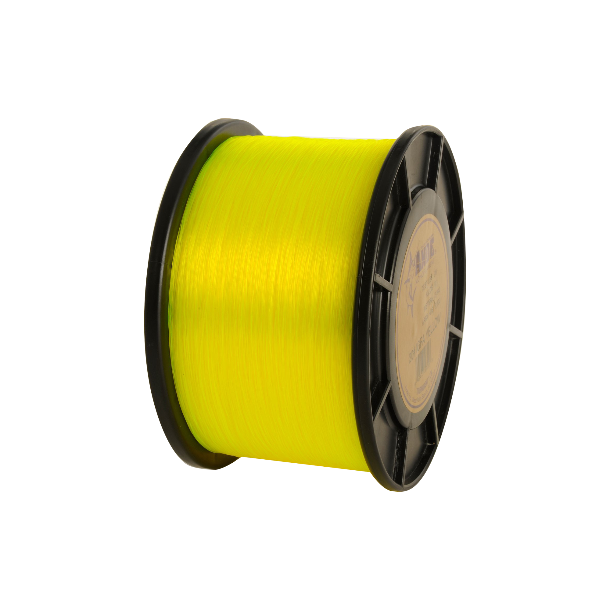

Ande Tournament Monofilament
Diameter chart, reel capacity & backing guide

ANDE Tournament is the company's line-class mono, manufactured for its stated IGFA testing purpose. The verified yellow range offers 8, 10, 12, 16, 20 and 30 lb. Choose the exact line class for your intended use rather than substituting a nearby pound-test label.
- Construction
- Line-class monofilament
- Listed strengths
- 8-30 lb
- Line type
- Monofilament main line
For a deliberate line-class choice
Tournament is a different choice from standard ANDE Premium when the line's stated test class matters. ANDE says it controls extrusion to meet maximum allowed wet breaking strength, but this guide is not certification that a particular catch or spool meets any record rules. Check current rules separately before a record attempt, then plan reel fill using the exact selected diameter.
How much ANDE Tournament will fit?
Calculated estimates, not measured fills. Stop at the reel manufacturer's fill level even if some line remains.
Ande Tournament Monofilament diameter chart
Yellow Tournament variants only. 8-20 lb include checked 1/8- and 1/4-lb packages; 30 lb includes only the verified 450-yard 1/4-lb package.
| Strength | Inches | mm | Spools (yd) |
|---|---|---|---|
| 0.009843 | 0.250 | 750, 1500 | |
| 0.011811 | 0.300 | 675, 1350 | |
| 0.012795 | 0.325 | 560, 1125 | |
| 0.014764 | 0.375 | 415, 835 | |
| 0.016732 | 0.425 | 325, 650 | |
| 0.020669 | 0.525 | 450 |
Choosing your ANDE Tournament strength
Choose the actual offered line class, including 16 lb rather than an assumed 15 lb substitute. Capacity alone cannot establish compliance with any competition rules.
The checked 12 lb Tournament line is 0.325 mm, compared with 0.35 mm for Premium 12 lb. Same-brand pound-test labels need not produce the same fill.
The 30 lb 1/8-pound package has conflicting yardage on the official site. Use the independently matching 450-yard 1/4-pound option in this guide.
This is a source-based specification and setup guide, not a hands-on review or comparative performance test.
Want a guided recommendation?
Continue in the Setup WizardSame pound test, different diameters
At your selected strength
Loading diameter comparisons...
What changes with another line?
Nearby diameters in the line database
| Line | Strength | Inches | Difference |
|---|---|---|---|
| Loading line database... | |||
Backing, working line & leaders
Check the Tournament label
Use the exact test class and package instead of a nearby Premium strength. The two mono families are not interchangeable specification sources.
Plan the working length
The 12 lb 1/8-pound package supplies 560 yards. Allocate the amount needed for the selected reel and keep the remainder for other fills or a replacement section.
Exclude the disputed package
The official 30 lb 1/8-pound metadata says 22 yards while its chart says 225. This guide does not pick one by assumption; it uses the 450-yard package instead.
How Much Fits on These Reels?
Estimated full-spool capacity for the ANDE Tournament strength selected above, with no backing. These are calculated examples, not physical tests or recommendations for every pairing.
Loading capacity estimates...
ANDE Tournament questions, answered
Where is the 15 lb Tournament option?
ANDE's current yellow Tournament offering includes 16 lb, not 15 lb. Check the package's exact line-class label before buying, especially when a competition specifies a strength limit.
Does this certify IGFA compliance?
No. It reports ANDE's stated product purpose. Record eligibility, testing and current rules require separate confirmation.
Why not show 225 yards at 30 lb?
The official chart and current variant metadata conflict for that package. Only the matching 450-yard option is accepted here.
Specifications & sources
Checked September 13, 2026 against the official product information linked below. Published mm is taken from current variant metadata and checked visually against the Tournament chart; inches are converted from mm. Offered specifications do not establish current stock; this is not an independent diameter measurement.
Calculations use the catalog's listed inch diameters. Published inch and millimeter values may differ slightly because of rounding.
- Ande official product information Original Tournament yellow mainline; current variant mm metadata and chart verify 8,10,12,16,20,30 lb. Checked 1/8 and 1/4 weight-spool options; conflicting 30 lb 1/8 spool deliberately excluded.
- Ande official supporting source Original Tournament yellow mainline; current variant mm metadata and chart verify 8,10,12,16,20,30 lb. Checked 1/8 and 1/4 weight-spool options; conflicting 30 lb 1/8 spool deliberately excluded.